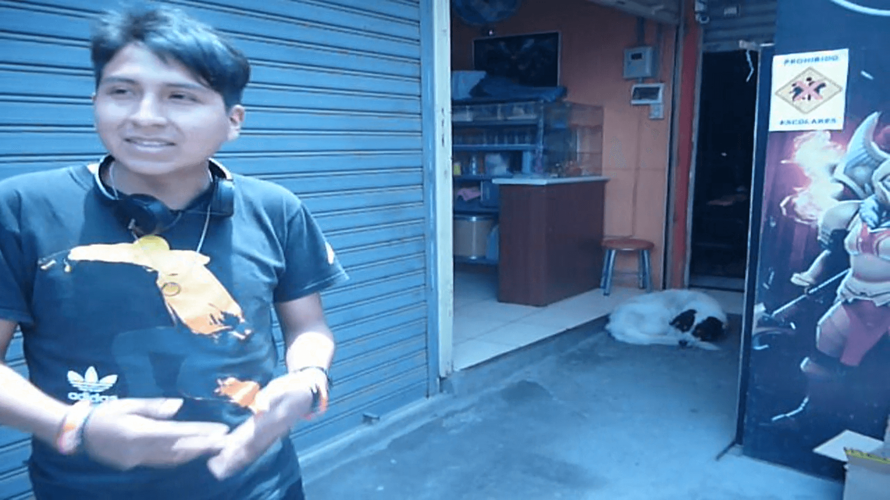

Arti Player
El proyecto va dirigido a los gamers del juego de dota 2, a lo largo de la historia de este videojuego en nuestro país se ha demostrado que los gamers invierten mucho de su tiempo y dinero para poder satisfacer sus oportunidades de mejorar y pertenecer a ligas grandes que se juegan por todo el mundo, entre ellas la IT, el internacional donde juegan los mejores equipos de todo el mundo.
Estudiar y Definir
Realizamos una encuesta a una comunidad que actualmente pasa desapercibida, nos referimos a la comunidad del DOTA 2.

Idear
Realizamos una pequeña reunión de grupo con el fin de exponer nuestras ideas para el proyecto.

prototipar y probar
Realizamos un apunte de ideas, seleccionando las mejores y comenzar a crear prototipos de estos, y a su vez probar la funcionalidad de estos.